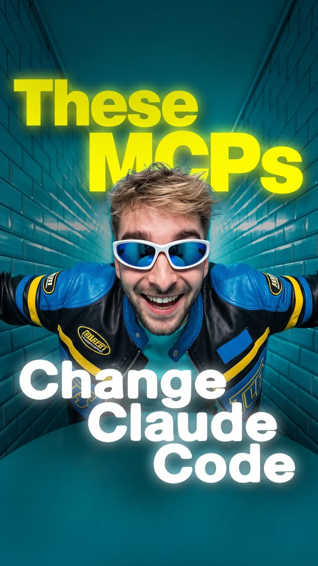

Facebook Reel｜Seb Intel：讓 Claude Code 接上即時研究、瀏覽器、爬蟲與創意生成的 5 個 MCP

一句話摘要
這支 Reel 的價值不在「裝越多 MCP 越好」，而在於把 Claude Code 的外部能力拆成五個可選模組：搜尋、瀏覽器測試、網站資料擷取、創意媒體生成與 Chrome 偵錯／互動；每個模組都應依任務、帳號權限、成本與資料敏感度選擇性啟用。
來源與擷取範圍
Facebook 分享網址會導向 Seb Intel 的 Reel。以可下載的約 46.8 秒影片進行本機語音辨識、關鍵畫面核對後，影片明確列出：Perplexity MCP、Playwright MCP、Firecrawl MCP、Higgsfield MCP 與 Chrome MCP。Facebook 頁面顯示的觀看／心情數會因端點與快取不同而異，本文不將其作為穩定指標。
語音辨識是為了輔助轉錄，已依畫面校正明顯的品牌誤辨：Perplexity、Firecrawl、Higgsfield；其中「Chrome MCP」在影片中是泛稱，本文以可公開查核的 ChromeDevTools/chrome-devtools-mcp 專案補充其代表性能力，不推定兩者必為完全相同的安裝包。
Reel 的五個 MCP 與可確認的用途
### 1. Perplexity MCP：即時網路研究
影片稱它能讓 Claude 取得內建知識之外的即時網路資訊。Perplexity 官方 MCP 文件確認其 MCP Server 用於把 Perplexity 的搜尋與推理能力連接到 AI assistant。適合查最新版文件、版本差異與需要引用來源的研究；輸出仍應回查原始來源，不把搜尋摘要直接當成事實。
### 2. Playwright MCP：瀏覽器控制與 Web 測試
影片展示 Claude 操作瀏覽器、點擊、填表與測試網站。Microsoft 維護的 Playwright MCP 是正式公開專案，代表這類工具可讓 agent 以 Playwright 的瀏覽器自動化能力協助測試與檢查網站。涉及登入、送出表單、付款、發文或刪除資料時，必須保留人工確認關卡。
### 3. Firecrawl MCP：網站擷取與結構化資料
影片示範讓 Claude 爬取網站、萃取重要內容並帶回工作流；畫面以 Stripe pricing 為案例。Firecrawl 官方 MCP 文件提供即時使用、登入與 API key 三種設定脈絡。這類工具適合文件整理、RAG 資料準備與公開網站研究，但要遵守網站條款、robots、速率限制與個資規範。
### 4. Higgsfield MCP：影像、影片與音訊創意生成
影片畫面與旁白指向 Higgsfield MCP，主張可連接創意 AI 模型，生成圖片、影片與音訊。Higgsfield 官方頁說明其 MCP Server 可接到 Claude、Claude Code 與其他 MCP-compatible client，並提供多種影像／影片模型。生成前應確認方案、額度、輸出授權、人物肖像與商標使用界線。
### 5. Chrome MCP：使用中的 Chrome 分頁與開發者工具脈絡
影片稱最後一項可讓 Claude 與正在使用的 Chrome 分頁及其資訊互動。公開的 ChromeDevTools/chrome-devtools-mcp 專案定位為「供 coding agents 使用的 Chrome DevTools」，可作為這類能力的可驗證代表。Chrome 分頁可能含登入態、內部文件或私人資料；應採最小權限、限制允許的網域與工作階段，並在高風險操作前人工核准。
官方共同基礎：Claude Code 的 MCP 連線
Anthropic 的 Claude Code 文件確認，Claude Code 可透過 Model Context Protocol 連接外部工具與資料來源。MCP 是把工具接給 agent 的介面，不是工具品質、安全性或免費程度的保證。能裝進設定檔，不等於適合放進每個專案或交給 agent 自主執行。
導入檢核表
- 先用單一低風險情境驗證，例如讀公開文件、在測試站跑 Playwright、擷取自家網站。
- 每個 server 都確認來源是否為官方文件或可信維護者、更新狀態、授權與費用。
- API key 以環境變數或安全憑證機制管理，不寫入 repo、提示詞或螢幕錄影。
- 瀏覽器連線採隔離 profile；不要讓 agent 預設取得私人 Gmail、支付、後台或客戶資料。
- 將「研究／草擬」與「提交／發布／刪除」分層，高影響動作強制人工確認。
- 為每一種 MCP 留下可追溯的輸入、工具呼叫與輸出紀錄，便於除錯與稽核。
原始連結
- Facebook 原分享：https://www.facebook.com/share/r/1DPhMDJKVo/
- Facebook Reel：https://www.facebook.com/reel/1890278295689289
- Claude Code MCP 文件：https://docs.anthropic.com/en/docs/claude-code/mcp
- Perplexity MCP Server：https://docs.perplexity.ai/guides/mcp-server
- Microsoft Playwright MCP：https://github.com/microsoft/playwright-mcp
- Firecrawl MCP：https://docs.firecrawl.dev/mcp-server
- Higgsfield MCP：https://higgsfield.ai/mcp
- Chrome DevTools MCP：https://github.com/ChromeDevTools/chrome-devtools-mcp